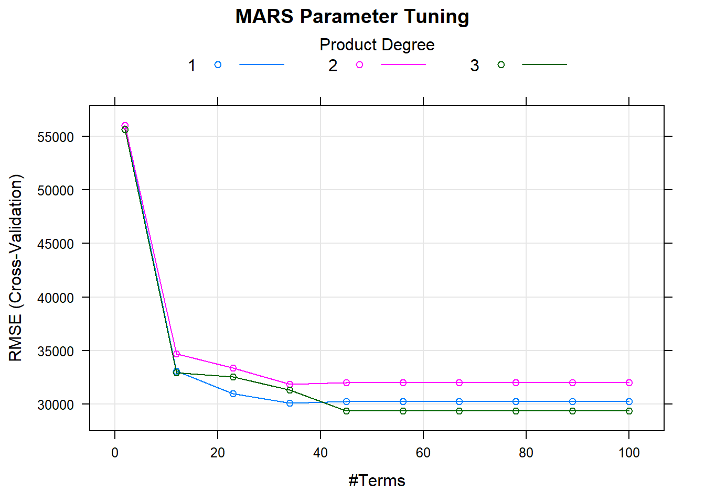

Intro
These notes are pulled from various classes, tutorials, books, etc. and are intended for my own consumption. If you are finding this on the internet, I hope it is useful to you, but you should know that I am just a student and there’s a good chance whatever you’re reading here is mistaken. In fact, that should probably be your null hypothesis… or your prior. Whatever.
1 Probability
Placeholder
1.1 Principles
1.2 Discrete Distributions
1.2.1 Binomial
1.2.2 Negative-Binomial
1.2.3 Geometric
1.3 Continuous Distributions
1.3.1 Normal
Example
1.3.2 Example
1.3.3 Example
1.3.4 Example
1.3.5 Normal Approximation to Binomial
1.3.6 Example
1.3.7 Example
1.3.8 From Sample to Population
2 Inference
3 Experiments
Some significant applications are demonstrated in this chapter.
3.1 Example one
3.2 Example two
4 Regression
5 Classification
6 Regularization
7 Non-linear Models
Placeholder
7.1 Splines
7.2 MARS
7.3 GAM
8 Decision Trees
Placeholder
8.1 Classification Tree
8.1.1 Confusion Matrix
8.1.2 ROC Curve
8.1.3 Caret Approach
8.2 Regression Trees
8.2.1 Caret Approach
8.3 Bagging
8.4 Random Forests
8.4.0.1 Bagging Classification Example
8.4.0.2 Random Forest Classification Example
8.4.0.3 Bagging Regression Example
8.4.0.4 Random Forest Regression Example
8.5 Gradient Boosting
8.5.0.1 Gradient Boosting Classification Example
8.5.0.2 Gradient Boosting Regression Example
8.6 Summary
9 Support Vector Machines
These notes rely on (James et al. 2013), (Hastie, Tibshirani, and Friedman 2017), and (Kuhn and Johnson 2016). I also reviewed the material in PSU’s Applied Data Mining and Statistical Learning (STAT 508).
The SVM algorithm searches for a linearly separable hyperplane separating members of one class from the other. If such a hyperplane does not exist, SVM uses a nonlinear mapping to transform the training data into a higher dimension. With an appropriate nonlinear mapping to a sufficiently high dimension, data from two classes can always be separated by a hyperplane. The SVM algorithm finds this hyperplane using support vectors and margins. SVM has relatively high accuracy, and is less prone to overfitting.
The support vector machine (SVM) is an extension of the support vector classifier which in turn is a generalization of the simple and intuitive maximal margin classifier.
9.1 Maximal Margin Classifier
The maximal margin classifier is elegant and simple, but rarely applicable to data sets since it requires that the classes be separable by a linear boundary. However it is the foundation of SVM and therefore a good path to understanding.
Given an \(n \times p\) data matrix X with binary response variable \(y \in [-1, 1]\) it may be possible to define a p-dimensional hyperplane
\[\beta_0 + \beta_1X_1 + \beta_2X_2 \dots + \beta_pX_p = 0\]
such that all observations of each class fall on opposite sides of the hyperplane. This “separating hyperplane” has the property that
\[y_i (\beta_0 + \beta_1X_1 + \beta_2X_2 \dots + \beta_pX_p = 0) \ge M\]
where \(M\) is some positive margin. If the \(\beta\) values are constrained so that \(\sum\beta^2 = 1\), then (it can be shown that) \(M\) is the perpendicular distance from observation i and the hyperplane. The maximal margin classifier maximizes \(M\). The maximization of \(M\) is a straight-forward task for your computer ((James et al. 2013)).
It should be obvious that in most cases a separating hyperplane does not exist. In fact, even if a separating hyperplane does exist, it may not be desirable, such as when the resulting margin is extremely narrow.
9.2 Support Vector Classifier
The maximal margin classifier can be generalized to non-separable cases using a so-called “soft margin”. The generalization is called the support vector classifier. The soft margin allows some misclassification in the interest of greater robustness to individual observations.
The support vector classifier optimizes
\[y_i (\beta_0 + \beta_1X_1 + \beta_2X_2 \dots + \beta_pX_p = 0) \ge M(1 - \epsilon_i)\]
where the \(\epsilon_i\) are slack variables which sum to some constant tuning parameter \(\sum{\epsilon_i} = C\). The slack variable values indicate where the observation lies. \(\epsilon_i = 0\) means the observation is on the correct side of the margin. \(\epsilon_i > 0\) means the observation is on the wrong side of the margin. \(\epsilon_i > 1\) means the observation is on the wrong side of the hyperplane. \(C\) sets the tolerance for margin violation. If \(C = 0\), then all observations must reside on the correct side of the margin, as in the maximal margin classifier. Notice that \(C\) is a also an upper bound on the number of observations that violate the hyperplane. \(C\) controls the bias-variance trade-off. As \(C\) increases, the margin widens allows more violations. The classifier bias increases but its variance decreases.
The optimization problem has an interesting property in that only observations that either lie on the margin or that violate the margin affect the hyperplane. These observations are known as support vectors. As \(C\) increases, the number of violating observations increase, and thus the number of support vectors increases. This property makes the algorith robust to the extreme observations far away from the hyperplane.
The only shortcoming with the algorithm is that
The Support Vector Machine (SVM) algorithm finds the optimal hyperplane that classifies the data points. The optimal hyperplane is the one which maximizes the margin betweeen the data points and the hyperplane. Support vectors are data points close to the hyperplane and influence the position and orientation of the hyperplane.
Maximize the margin with the hinge loss function:
\[c(x, y, f(x)) = \begin{cases} 0, & \mbox{if } y \cdot f(x)>1 \\ 1-y \cdot f(x), & \mbox{else} \end{cases}\]
dfd
\[f(n) = \begin{cases} n/2, & \mbox{if } n\mbox{ is even} \\ 3n+1, & \mbox{if } n\mbox{ is odd} \end{cases}\]
A separable dataset is one in which the classes do not overlap, so the classes can be separated by a decision boundary. The maximal margin separator is the decision boundary that is furthest from both classes. It is located at the mean of the relevant extreme points from each class.
The kernal is the type of decision boundary (linear, polynomial, etc.).
## Warning: package 'tidyverse' was built under R version 3.5.3## -- Attaching packages ----------------------------------------------------------------------------------------------------------------------- tidyverse 1.3.0 --## v ggplot2 3.2.1 v purrr 0.3.3
## v tibble 2.1.3 v dplyr 0.8.3
## v tidyr 1.0.0 v stringr 1.4.0
## v readr 1.3.1 v forcats 0.4.0## Warning: package 'ggplot2' was built under R version 3.5.3## Warning: package 'tibble' was built under R version 3.5.3## Warning: package 'tidyr' was built under R version 3.5.3## Warning: package 'readr' was built under R version 3.5.3## Warning: package 'purrr' was built under R version 3.5.3## Warning: package 'dplyr' was built under R version 3.5.3## Warning: package 'stringr' was built under R version 3.5.3## Warning: package 'forcats' was built under R version 3.5.3## -- Conflicts -------------------------------------------------------------------------------------------------------------------------- tidyverse_conflicts() --
## x dplyr::filter() masks stats::filter()
## x dplyr::lag() masks stats::lag()df <- data.frame(
samp = 1:25,
sugar = c(10.9, 10.9, 10.6, 10, 8,
8.2, 8.6, 10.9, 10.7, 8,
7.7, 7.8, 8.4, 11.5, 11.2,
8.9, 8.7, 7.4, 10.9, 10,
11.4, 10.8, 8.5, 8.2, 10.6)
)
ggplot(df, aes(x = sugar)) +
geom_point(aes(y = 0))
The e1071 library implements the SVM algorithm. The following function builds a linear SVM classifier.
## Warning: package 'e1071' was built under R version 3.5.3svm_model <- svm(samp ~ .,
df,
type = "C-classification",
kernel = "linear",
scale = FALSE)
print(svm_model)##
## Call:
## svm(formula = samp ~ ., data = df, type = "C-classification", kernel = "linear",
## scale = FALSE)
##
##
## Parameters:
## SVM-Type: C-classification
## SVM-Kernel: linear
## cost: 1
##
## Number of Support Vectors: 25Build the weight vector from the coeficients and sv elements in the model.
J
The illustration below shows two classes of observations with measurements on two variables and a separating hyperplane. The dashed lines show the maximal margin separating the classes. Three observations lie along the maximal margin lines. These three observations are support vectors. They “support” the maximal margin hyperplane in the sense that if these points were moved the maximal margin hyperplane would move as well. The maximal margin hyperplane depends on the support vectors, but not on the other observations.

10 Principal Components Analysis
11 Clustering
12 Text Mining
Appendix
Placeholder
12.1 Open Source Software for Data Science
12.2 Data, visualization, and designing with AI
12.3 Deploying End-to-End Data Science with Shiny, Plumber, and Pins
12.4 Health Connected Siloed Data Sources and Streamlined Reporting Using R
12.5 Builiding a new data science pipeline for teh FT with RStudio Connect
12.6 How to win an AI Hackathon without using AI
12.7 Production-grade Shiny Apps with golem
12.8 Making the Shiny Contest
12.9 Styling Shiny apps with Sass and Bootstrap 4
12.10 R: Then and Now
12.11 Journalism with RStudio, R, and teh Tidyverse
12.13 FlatironKitchen: How we overhauled a Frankensteinian SQL workflow with the tidyverse
12.14 Making better spaghetti (plots): Exploring longitudinal data with brolgar package
12.15 Object of type ‘closure’ is not subsettable
12.16 Branding and Packaging Reports with R Markdown
12.17 The Glamour of Graphics
12.18 Don’t repeat yourself, talk to yourself! Repeated reporting in the R universe
12.19 RStudio 1.3 Sneak Preview
12.20 One R Markdown Document, Fourteen Demos - or - Tidyverse 2019-20
12.21 Best Practices for programing with ggplot2
12.22 Spruce up your ggplot2 visualization with formatted text
12.23 The little package that could: taking visualization to the next level with the scales package
12.24 Advances in tidyeval
12.25
References
Hastie, Trevor, Robert Tibshirani, and Jerome Friedman. 2017. The Elements of Statistical Learning. 2nd ed. New York, NY: Springer. https://web.stanford.edu/~hastie/ElemStatLearn/.
James, Gareth, Daniela Witten, Trevor Hastie, and Robert Tibshirani. 2013. An Introduction to Statistical Learning: With Applications in R. 1st ed. New York, NY: Springer. http://faculty.marshall.usc.edu/gareth-james/ISL/book.html.
Kuhn, Max, and Kjell Johnson. 2016. Applied Predictive Modeling. 1st ed. New York, NY: Springer. http://appliedpredictivemodeling.com/.